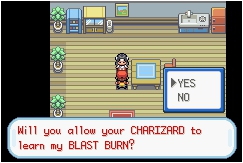
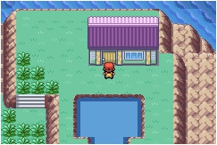
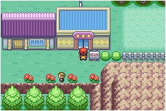
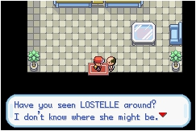

บทที่ 24 / 29
เกาะลับ2<Two Island>
❖
ที่เกาะนี้ด้านบนสุด จะมีผู้หญิงสอนท่าให้โปเกมอนเริ่มต้นของเรา ระหว่างท่า Blast Burn, Frenzy Plant,Hydro Cannon ขึ้นอยู่กับโปเกมอนเริ่มต้นที่เราเลือก


ให้เข้าไปที่บ้านขวาล่าง ซึ่งเป็น Game Corner จะเจอเจ้าของร้านขอให้เราไปตามหาเด็กผู้หญิงที่ชื่อ Lostelle ที่เกาะลับ3 ให้เรานั่งเรือไป

